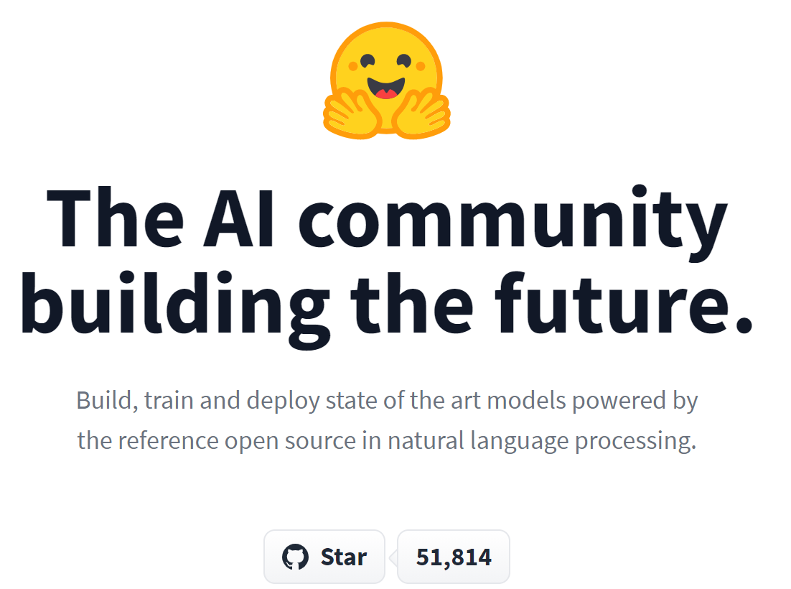

NLP 必备网站 Hugging Face
简介
今天来分享一个网站吧，Hugging Face，最大的 NLP 社区，提供了数以千计的预训练模型，涵盖一百余种语言、覆盖几乎所有常见的 NLP 任务。其提供的 transformers 框架提供了简洁高效的 api，可以在无需处理模型细节的前提下，快速进行推理、微调。Hugging Face 至今在 github 上已有超过 5 万个 star，可见其影响力。
为什么需要 Hugging Face

Hugging Face 不仅仅是若干数据集、预训练模型的资源整合，在此基础上，它还拥有如下特性：
- 开箱即用：对于常见的 NLP 任务，很容易找到对应的预训练模型并进行实验，无需过度关注模型的细节。
- 多后端支持：Transformers 支持 Pytorch、Jax、Tensorflow 三种框架，无需再为框架微调苦恼。
- 可定制性：高效封装的同时，Transformers 支持魔改定制模型，模型文件可以单独使用，方便快速实验。
鉴于现在 NLP 方向的研究、工程基本都是大规模预训练模型相关，Hugging Face 的重要性就一目了然了。如果你是学生党，Hugging Face 能让你在各类 NLP 比赛中快速使用预训练模型进行实验。如果你已经工作，Hugging Face 也能帮你减少业务问题上的试错成本，快速把任务跑起来。
有用的链接
- github 链接，可以对其使用方法、支持的模型有个快速的认识。
- Hugging Face 官网，试试推理 api、看一看文档。
- Hugging Face Course，Hugging Face 出品的官方课程，目前更新了前四章，基本上是 step-by-step 的教你从推理到微调任务如何构建和完成。
总结
没错，这么短的一篇博客还有总结。今天刚刚看完 Hugging Face 的前四章课程，感觉学到了很多。早点知道也不会走一些弯路了，一起加油吧！